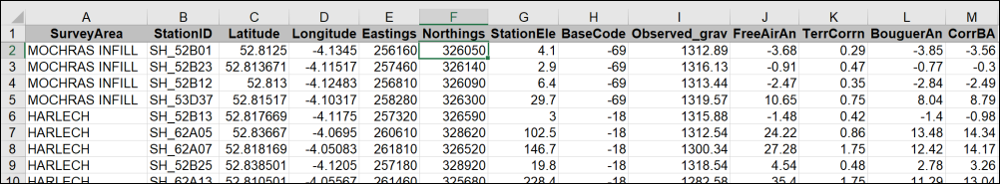
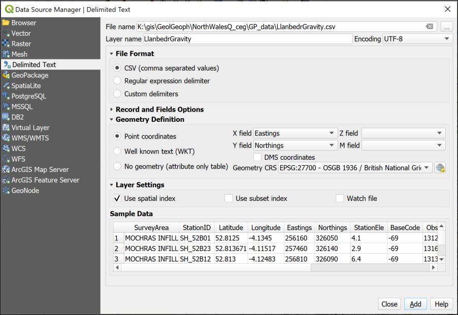
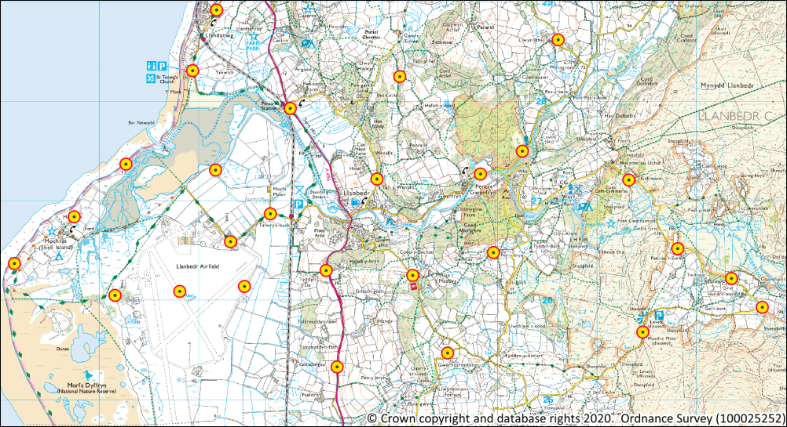
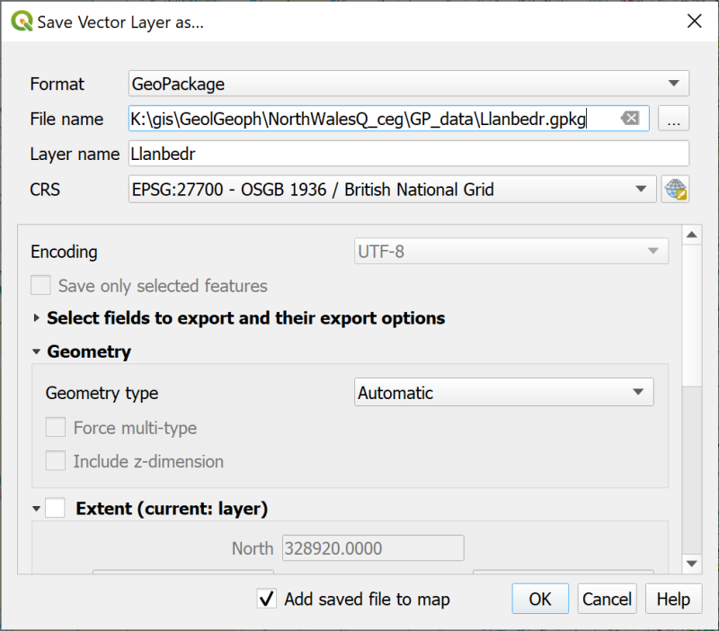

Importing point data from xyz files
The background to importing point data from xyz files will be covered in the lecture segment at the beginning of the class, and the presentation and any other supporting materials will be available in Minerva. The lecture segment should help you to understand why you are doing these exercises. If you still aren’t sure, please ask Clare.
Learning outcomes
When you have completed this section of the workbook you should be able to
- demonstrate how to set up and format xyz files ready to be imported into QGIS
- Import a csv file into QGIS so that it appears in the correct location and display the data on a map
Introduction
The data that was collected using GPS and that you imported in to QGIS shows you one way of adding point data to GIS. You will almost certainly also come across point data as an Excel/spreadsheet file or as a text file. If these contain x and y coordinates they can easily be added to GIS.
Access to software
Note that where the following instructions talk about Excel files, these can also be created and opened using OpenOffice Calc and LibreOffice Calc. Excel is available as part of the Office365 suite and you have access to that via the University.
Csv files are a form of text file and can be opened in any text editor as well as Excel, OpenOffice or LibreOffice. On Windows one recommendation is Notepad++ which has more functionality than the basic Notepad, but there are plenty of options on all operating systems.
Data to download
You will be using the North Wales project that you created in the Introduction chapter. If you no longer have that project then you can download another copy from the Week 7 folder in Minerva.
- The data that you downloaded in Week 7 should contain a folder called
GP_data - That folder should contain an Excel spreadsheet called
LlanbedrGravity.xls. If you can no longer find that file you can download another copy from the Week 9 folder in Minerva.
Creating xyz files
Xyz files can be either comma separated value text files (often with an extension of .csv) or Excel or OpenOffice/LibreOffice spreadsheets. They contain point data which includes coordinates for a geographic location either in two dimensions (x and y) or three (x,y and z).
- Open the
LlanbedrGravity.xlsin a spreadsheet program now and have a look at the data it contains.

QGIS can only import xyz data from .csv files. You can either save the data as csv in Excel or OpenOffice or create it directly in a text editor such as Notepad++ (not Word!).
- Use Excel, OpenOffice or LibreOffice to convert the Excel file to csv -
File > Save As...- set the format to
CSV (Comma delimited) (*.csv)(not to any of the other versions of csv)
Warning
Note that column headings need to be short and contain no spaces or non-standard characters - so text and numbers only. Also note that the column heading mustn’t start with a number.
In particular note the Eastings and Northings columns - these are in effect the x and y columns. These are in British National Grid 1 m coordinates (The grid numbers such as SH or SJ have been replaced with numbers - 22 and 23). Other numerical columns can be used for the z values, or the data. In this case we’ll be using the CorrBA (Corrected Bouguer Anomaly in mGal) as the z values.
Import points from xyz file to QGIS
Start by opening your map of Llanbedr in North Wales in QGIS. You should have a view of the 1:25 000 raster map from Ordnance Survey. If not, turn layers on and off as required, and add the 1:25 000 raster map from the Browser if necessary.
If you add the xyz file to your map directly it won’t appear. QGIS will view it as a table without spatial information. You need to tell QGIS which fields contain the x and y data before it can display it.
- Open the
Data Source Manager-Layer > Data Source Manager - Click on the
Delimited Texttab on the left - In the
File namefield at the top browse to your csv file and select it - Under
Layer nametype a name for your new layer, e.g.LlanbedrGravity - Check that the
File Formatis set toCSV - Next to
Point coordinatessetX field=EastingsY field=Northings
- and check that the
Geometry CRSis set toBritish National Grid - Check that
Use spatial indexis ticked and that theSample databelow looks like your original spreadsheet. - Click on
Addto convert the file thenClosethe window.

You should find that you have a series of dots spread across your map. If you can’t see them make sure that the new layer is above the background map in the Layers panel.

Exporting a layer to a geopackage
At the moment this file is still not in a GIS format. You need to export it to a geopackage to make it permanent1.
- Right-click on the layer in the Layers panel
Export > Save Features As...- The
Formatshould beGeoPackage - Using the button on the right of the
File namefield navigate to theGP_datafolder then typeLlanbedras the name of your new GeoPackage - The
Layer nameshould be something which tells you what the layer contains, e.g.LlanbedrGravity - The
CRSshould already be set toEPSG:27700 - OSGB 1936 / British National Grid. If it isn’t, set that now.
- The
- Check that
Add saved file to mapis ticked - Click
OKto export the layer to the geopackage.

- Remove the original gravity point layer to keep your map tidy.
- Save your map.
-
Zoom to layerto check that your new layer is in the correct location. Your map should still look something like the map above - the locations won’t have moved. Note that I’ve changed the symbology so that the points are more visible. -
Right-click on the
LlanbedrGravitylayer in the Layers panel and open theAttribute table - Have a look at the table - it should basically look the same as the original spreadsheet except that is has gained a field called
fidfor Feature ID.
You should finish this chapter with a project containing the points imported from the original spreadsheet with the 1:25 000 raster background from Ordnance Survey providing a background map.
In the next chapter we’ll look at how we can analyse the points and display the data in different ways.
Make sure you have this project saved and move on to the next chapter.
-
I’ve used a geopackage here, but it could be exported to any GIS format such as a shapefile instead. ↩